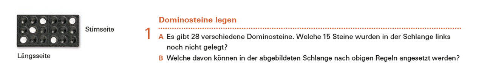
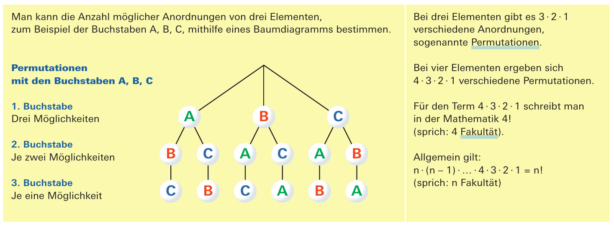
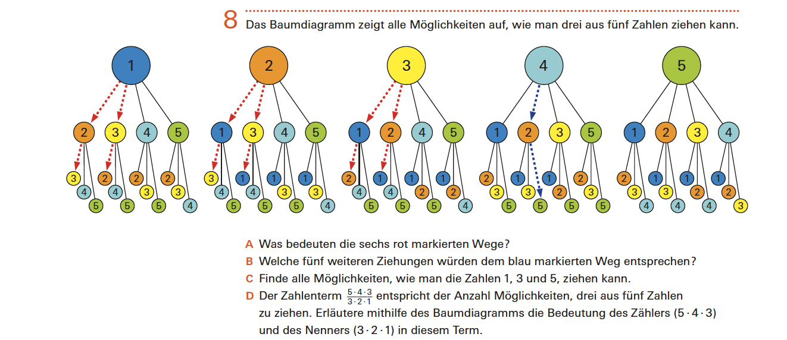
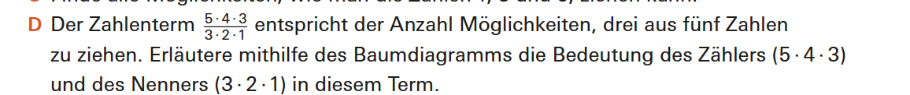

Bezug zur SchulpraxisZählen ohne Formeln
Die vier Grundsituationen, die wir in diesem Kapitel auseinandergelegt und mit Formeln versehen haben, wirken auf den ersten Blick wie Hochschulstoff. Tatsächlich kommen sie alle in den Lehrmitteln der Sekundarstufe I vor, und zwar nicht als Randnotiz.
Der Unterschied liegt nicht allein in den Zahlen – obwohl auch das zutrifft: Sie sind dort klein genug, dass sich jede Anzahl durch systematisches Zählen bestimmen lässt. Er liegt vor allem darin, dass die Situationen nicht benannt und nicht einander gegenübergestellt werden. Welche Grundsituation vorliegt, entscheidet sich in der Sekundarstufe I am Material und an der Frage – nicht an einer Zuordnung, die man zuvor gelernt hat.
Quelle: Mathbuch 1 (überarbeitete Ausgabe), Aufgabe L5 A, S. 70

Quelle: Mathbuch 1 (überarbeitete Ausgabe), Denkspuren, S. 59
Die Zahlen bleiben klein
Im Mathbuch beginnt die Kombinatorik so:
Halten Sie hier kurz inne. Welche der vier Grundsituationen erkennen Sie in den sechs Zetteln wieder, und welche Ziehungsart liegt jeweils vor?
Antwort anzeigen
Zwei Zettel lassen sich zwanglos zuordnen: das Händeschütteln und das Platznehmen im Viererabteil. Bei anderen gelingt die Zuordnung nicht eindeutig, weil der Text offenlässt, ob eine Person zwei Objekte erhalten darf oder ob zwei Sitzplätze voneinander unterschieden werden. Und zwei Zettel unterscheiden sich in genau einem Merkmal: zwei gleiche Getränkedosen gegen zwei verschiedene Reiseführer.
Einer fällt ganz aus dem Rahmen: die vierstelligen Zahlen aus den Ziffern $1$, $3$ und $6$, wobei die Drei zweimal vorkommt. Das ist keine der vier Grundsituationen, sondern eine Anordnung mit teilweise ununterscheidbaren Elementen – ein zusammengesetzter Fall, der sich durch systematisches Zählen dennoch bewältigen lässt.
Teilaufgabe B1 lässt anschliessend eine fünfte Person mitreisen und alle sechs Situationen entsprechend umschreiben. Damit wird aus dem Zählen ein Verallgemeinern, ohne dass eine Formel aufgestellt würde – wer die Struktur erkannt hat, tauscht bloss eine Zahl aus.
Im Übungsteil werden drei dieser Situationen anschliessend nebeneinandergestellt, und zwar zusammen mit den Rechnungen, die zu ihnen gehören:
Drei Situationen, drei Felder – aber nur zwei Rechnungen. Das dritte Feld trägt ein Fragezeichen, und es gehört zu derjenigen Situation, die schon in der Ausgangsaufgabe aus dem Rahmen fiel: der Anordnung mit einer doppelt vorkommenden Ziffer. Wer die beiden gegebenen Rechnungen zuordnen will, muss beschreiben, wie gezählt wird wer das dritte Feld füllen will, muss eine Zählweise erst finden.
Ein Hinweis zur Vorsicht: Die Zuordnung lässt sich auch über die Ergebnisse treffen, ohne dass eine Struktur erkannt würde. Beim Händeschütteln unter vier Personen stimmt die Anzahl mit dem Wert des Terms $3\cdot 2\cdot 1$ überein – gezählt wird dort aber $3+2+1$ oder $\tfrac{4\cdot 3}{2}$, nicht ein absteigendes Produkt. Wer nur die Zahl vergleicht, kommt richtig heraus. Die Begründung, die die Aufgabe verlangt, trägt hier also die ganze Last.

Quelle: mathbu.ch 2, LU 21 «Gewinnen», Aufgabe 1, S. 70
Die Reihenfolge der Fälle
An anderer Stelle wird umgekehrt begonnen. Dort eröffnet die Lernumgebung Gewinnen mit einer einzigen Situation:
Ein Dominostein trägt zwei Augenzahlen von $0$ bis $6$. Der Stein mit einer $2$ und einer $5$ ist derselbe wie der mit einer $5$ und einer $2$ – die Reihenfolge spielt keine Rolle. Und es gibt Doppelsteine, die Wiederholung ist also erlaubt. Die Eröffnung dieser Lernumgebung ist damit ausgerechnet der Fall ohne Reihenfolge, mit Wiederholung – derjenige, den wir in diesem Kapitel zuletzt behandelt haben, weil sich seine Anzahl nicht durch eine naheliegende Abzählung gewinnen lässt.
Das Lehrmittel eröffnet also mit demjenigen der vier Fälle, den wir zuletzt behandelt haben. Und das ist bemerkenswert, weil unsere Reihenfolge nicht willkürlich war: Wir haben die vier Formeln auseinander entwickelt. Am Anfang stand der einfachste Fall, bei dem in jedem Schritt gleich viele Möglichkeiten zur Verfügung stehen. Verbietet man die Wiederholung, schrumpft die Auswahl von Schritt zu Schritt – daraus wurde $\tfrac{n!}{(n-k)!}$. Lässt man zusätzlich die Reihenfolge fallen, fasst man je $k!$ Anordnungen zusammen. Und der vierte Fall liess sich nur gewinnen, indem wir das Experiment umdeuteten und auf einen der bereits behandelten zurückführten.
In dieser Kette steht er also zwangsläufig am Schluss. Das Lehrmittel beginnt mit ihm.
Das ist kein Versehen, sondern die Anlage einer Konfrontationsaufgabe im Sinne des LUKAS-Modells: Sie nimmt die Grundidee vorweg, statt mit einem Spezialfall zu beginnen. Nun enthalten die vier Fälle einander nicht – sie beruhen auf zwei Entscheidungen, die jeweils so oder anders ausfallen, und schliessen sich damit gegenseitig aus. Das Domino ist also keine Situation, in der alle vier stecken.
Was es leistet, ist etwas anderes. Beide Entscheidungen liegen im Material und nicht im Aufgabentext: Man kann den Stein drehen, also zählt die Reihenfolge nicht, und es gibt Doppelsteine, also ist die Wiederholung erlaubt. Und die anderen drei Fälle schliessen sich unmittelbar an, indem man je eine Entscheidung umkehrt – verbietet man Doppelsteine, bleiben $21$ Steine unterscheidet man die beiden Hälften, werden es $42$ oder $49$. Im weiteren Verlauf der Lernumgebung werden sie denn auch nacheinander behandelt: das Minilotto, der Münzwurf und das Anordnen von Buchstaben.
Was für uns der schwierigste Fall ist, ist für die Lernenden also derjenige, an dem sich am wenigsten entscheiden lässt – und gerade deshalb der geeignete Anfang.
Die Vielfalt kommt in dieser Lernumgebung also auch vor, nur nacheinander statt nebeneinander. Nebeneinandergestellt wird sie an anderer Stelle, in einer Aufgabe mit sechs Situationen zu je fünf Personen – und dort ist zusätzlich die Darstellung freigestellt: Baumdiagramm, Tabelle oder Punkte und Pfeile. Auch im Übungsteil steht eine Aufgabe, deren sechs Teilaufgaben sechs verschiedene Zählstrukturen betreffen, ohne dass eine davon benannt würde zwei davon unterscheiden sich allein darin, ob die zu verteilenden Objekte gleich oder verschieden sind.

Quelle: mathbu.ch 2, LU 21, S. 73

Quelle: mathbu.ch 3, LU 18, Aufgabe 8, S. 60
Herleiten, ohne zu verallgemeinern
Damit ist noch nicht gesagt, dass in der Sekundarstufe I ausschliesslich gezählt würde. Zu unterscheiden ist allerdings, was hergeleitet und was aufgeschrieben wird.
Eine Formel in allgemeiner Gestalt, mit Variablen, steht in den betrachteten Lernumgebungen ein einziges Mal:
Das Baumdiagramm ist mit den Anzahlen der Möglichkeiten pro Stufe beschriftet – drei, je zwei, je eine –, daneben steht, dass es also $3\cdot 2\cdot 1$ Anordnungen gibt, dass sich bei vier Elementen $4\cdot 3\cdot 2\cdot 1$ ergeben, dass man dafür $4!$ schreibt, und schliesslich $n\cdot(n-1)\cdot\ldots\cdot 2\cdot 1 = n!$.
Behandelt wird an dieser Stelle nur der Fall, in dem alle Elemente angeordnet werden. Der allgemeine Fall mit Reihenfolge, ohne Wiederholung, bei dem das Produkt vorzeitig abbricht, kommt hier nicht vor.
Ungleich häufiger ist der andere Fall: Die Überlegung wird vollständig geführt, aber an konkreten Zahlen und ohne dass eine Variable auftritt. Das ist mit einer präformalen Herleitung gemeint – und wie weit sie tragen kann, zeigt eine Aufgabe zum Zahlenlotto, in der drei aus fünf Zahlen gezogen werden:
Die ersten drei Teilaufgaben lassen am Baumdiagramm erarbeiten, dass je sechs Wege zu denselben drei Zahlen führen. Erst darauf baut Teilaufgabe D auf: Der Zähler zählt die geordneten Ziehungen – fünf Möglichkeiten für die erste Zahl, vier für die zweite, drei für die dritte. Der Nenner zählt, auf wie viele Arten sich dieselben drei Zahlen anordnen lassen, also $3!$. Wer den Bruch bildet, teilt die geordneten Ziehungen durch die Anzahl der Reihenfolgen.
Wenige Seiten später wiederholt sich das mit sechs aus zweiundvierzig Zahlen – an einem Fall also, den man nicht mehr auszählen kann: \[ \frac{42\cdot 41\cdot 40\cdot 39\cdot 38\cdot 37} {6\cdot 5\cdot 4\cdot 3\cdot 2\cdot 1} \] Auch hier ist nach der Bedeutung von Zähler und Nenner gefragt.
Für die verbleibenden zwei Grundsituationen geschieht nichts dergleichen. Die Auswahl mit Reihenfolge, mit Wiederholung steckt im Zählprinzip des Baumdiagramms und wird am ehesten dort sichtbar, wo beim dreifachen Würfelwurf der Nenner $6\cdot 6\cdot 6 = 216$ entsteht. Und für den vierten Fall, das Domino, wird gar nichts hergeleitet: Die $28$ wird genannt oder als Begründungsauftrag gestellt.
Fazit
Die Formeln dieses Kapitels sind für den Unterricht der Sekundarstufe I also nicht das Ziel. Was Sie dort brauchen, ist die Sicherheit, sofort zu erkennen, welche Grundsituation eine Aufgabe meint, und die Fähigkeit zu beurteilen, wo eine Aufgabe mehrere Deutungen zulässt.